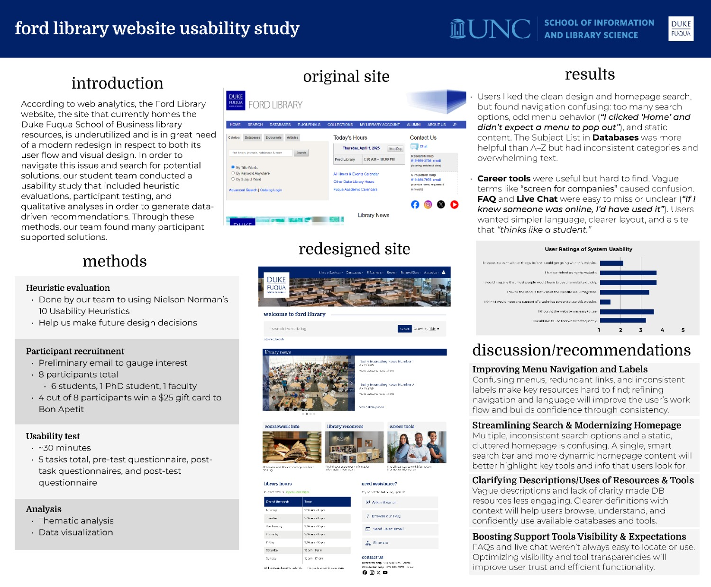
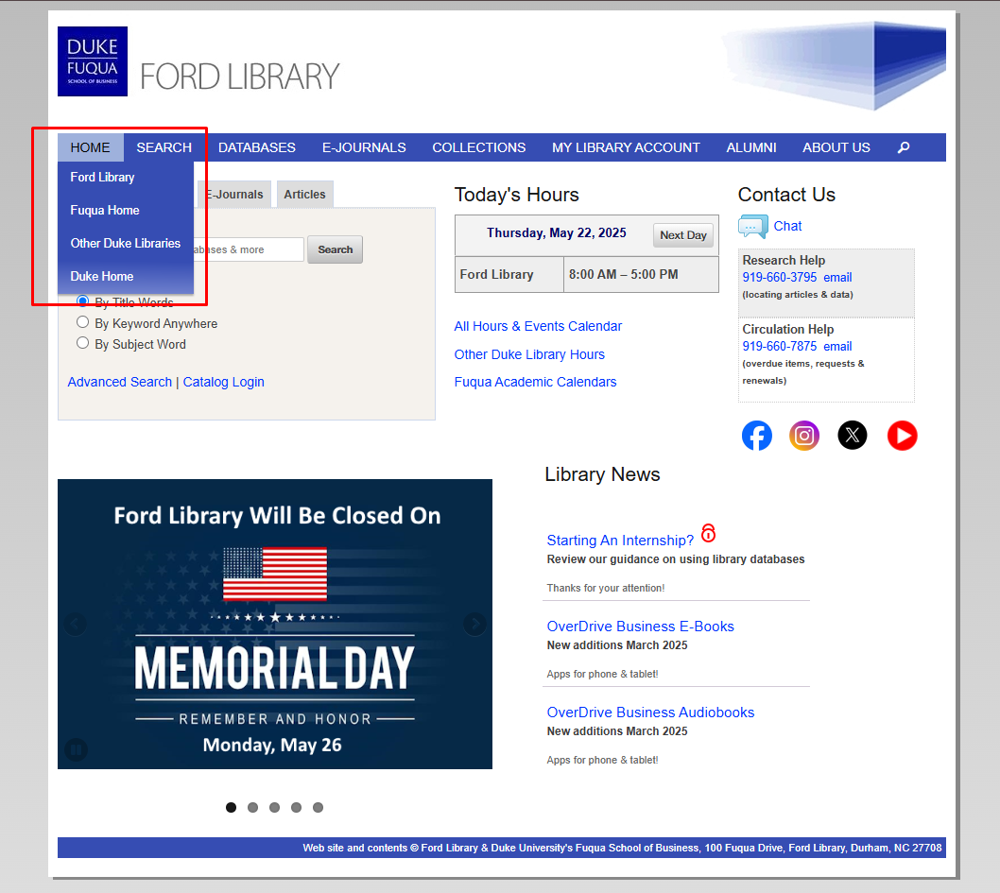
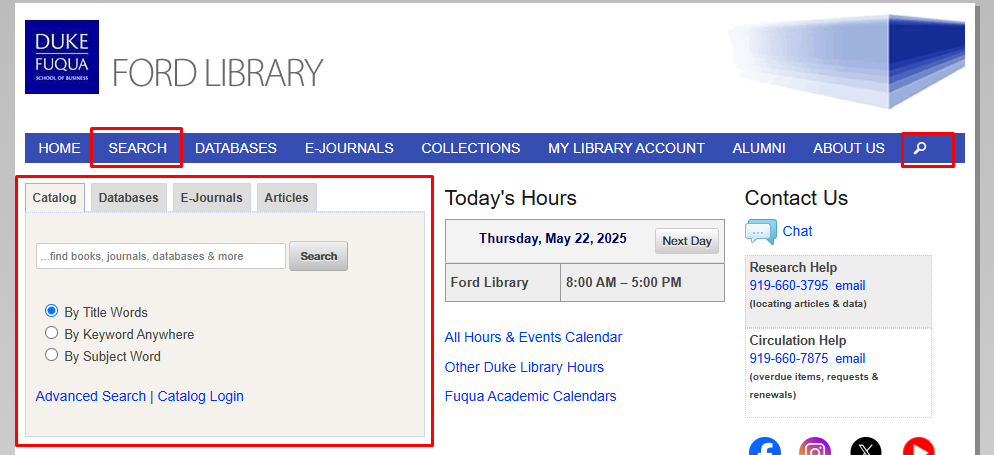
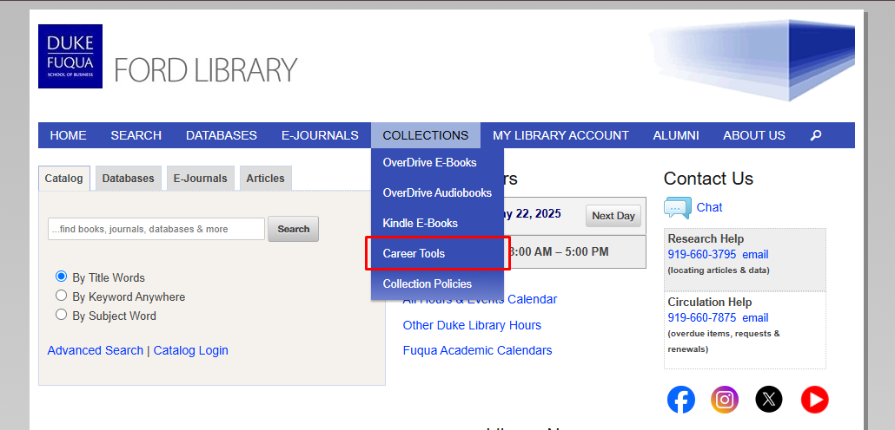
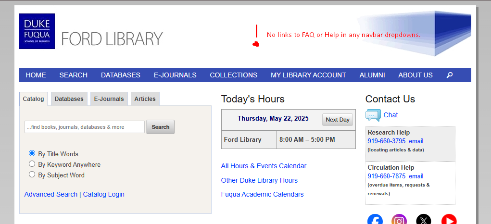
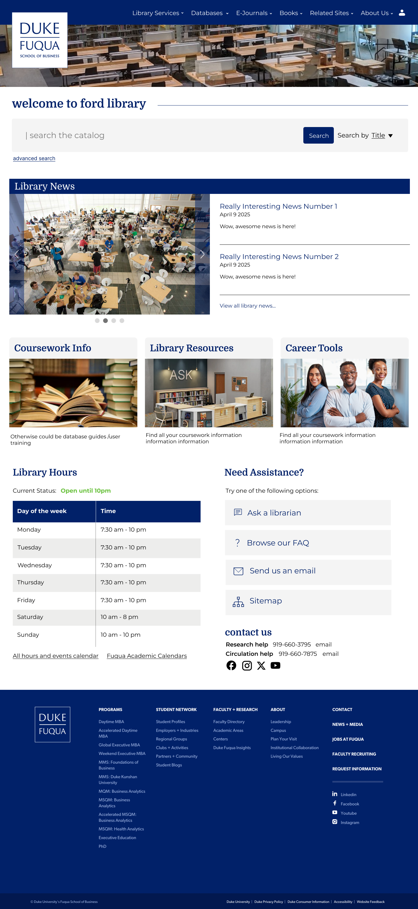
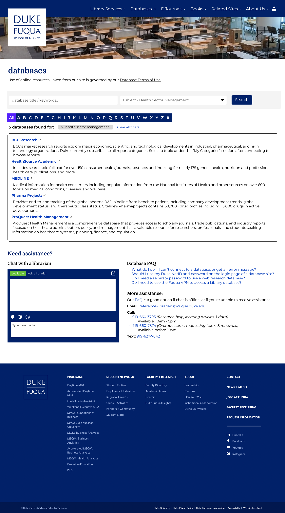
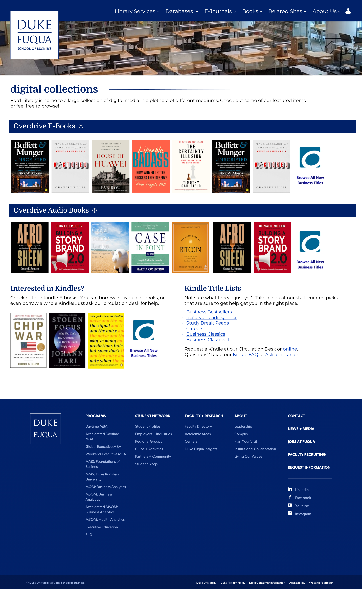

Ford Library Usability Study
Case Study
According to web analytics, the Ford Library website, the site that currently homes the Duke Fuqua School of Business library resources, is underutilized and is in great need of a modern redesign in respect to both its user flow and visual design. The staff at Ford Library asked my team to conduct a usability study on their website and make concrete recommendations on how to modernize it.

Project Overview
The Challenge
The Ford Library website faced persistent challenges with user engagement, confusing navigation paths, and outdated design. Despite offering valuable content, the site had not kept pace with modern usability standards and needed a user-centered redesign.
Our Approach
We conducted a two-phase evaluation process: a heuristic evaluation followed by formal usability testing with real users. Our goal was to ground redesign recommendations in real user behaviors rather than abstract best practices.
Key Objectives
- Evaluate navigation structure and menu clarity
- Assess search functionality and coherence
- Test content discoverability in key sections
- Evaluate help and support features
- Analyze visual hierarchy and layout effectiveness
Key Research Findings
1. Confusing Navigation Structure
Users were unsure whether menu items like "Home" and "Search" were links or dropdowns. Items like "Collections" and "My Library Account" lacked clarity in their labeling.

2. Redundant Search Functionality
The homepage featured multiple search bars without clear distinctions between them. Users struggled to understand whether searches would yield results from Ford Library, Duke Libraries, or third-party databases.

3. Career Resources Hidden
Valuable career tools were buried under the vague "Collections" label. Users expressed frustration at not being able to find tools they knew existed, like PitchBook and S&P Capital IQ.

4. Help Features Hard to Find
The "Ask Us" label was misunderstood as a search function rather than a contact method. FAQ content was buried in long, unscannable pages that required excessive scrolling.

Redesign Recommendations
Simplify Navigation
- Consolidate menu items with clearer labels
- Make all top-level items either links or dropdowns (not mixed)
- Move career resources to a more prominent location
Streamline Search
- Reduce redundant search bars
- Clearly label what each search tool covers
- Combine A-Z and Subject lists with filtering
Improve Help Features
- Make chat more visible with availability indicator
- Restructure FAQ into scannable sections
- Add contextual help throughout the site
Modernize Visual Design
- Create clear visual hierarchy on homepage
- Remove unnecessary banners and social media icons
- Improve mobile accessibility and touch targets
Redesign Samples
Based on our findings, we created high-fidelity mockups addressing key usability issues:

Streamlined Homepage
Simplified navigation, consolidated search, and prioritized key resources.

Combined Database View
Merged A-Z and Subject lists with filtering capabilities.

Condensed Collections Page
Combines 3 small pages with minimal content into one page for navigation efficiency.
Reflection
This project reinforced the importance of grounding website improvements in real user behavior rather than assumptions. Through structured evaluation and collaborative feedback, we identified pain points that weren't obvious from analytics alone.
The most surprising finding was how much confusion stemmed from simple inconsistencies in navigation behavior. Small changes like making all top-level menu items behave consistently could have a significant impact on usability.
If we had more time, we would conduct follow-up testing with our redesigned prototypes to validate our solutions before implementation. We'd also explore creating personalized dashboard views for different user types (students, faculty, staff).